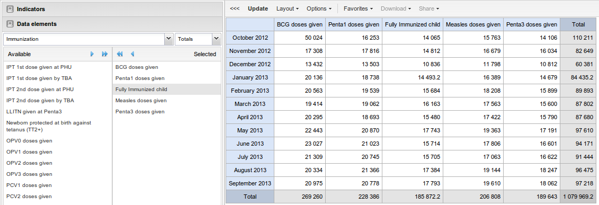

Table of Contents
The pivot table module enables users to create pivot tables, using all available data dimensions in DHIS 2. A pivot table is a dynamic tool for data analysis which lets you quickly summarize and arrange data according to its dimensions. Examples of data dimensions in DHIS 2 are data elements (explaining what the data means), periods (representing the time aspect) and the organisational hierarchy (representing the geographical location of the data). From these dimensions you can freely select dimension items to include in the pivot table.
A pivot table can arrange data dimensions on columns, rows, and as filters. When you place a data dimension on columns, the pivot table will display one column per dimension item. If you place multiple data dimensions on columns, the pivot table will display one column for all combinations of the items in the selected dimensions. When you place a data dimension on rows, the pivot table will display one row per dimension item in a similar fashion. The dimensions you select as filters will not be included in the pivot table, but will aggregate and filter the table data based on the selected filter items.
The workflow for creating a simple pivot table is:
Select dimension items in the left menu, for instance a few data elements.
Click "Layout" on the top menu and arrange the data dimensions as columns, rows, and filters. You can leave the selection as it is if desired.
Click "Update".
Based on the demo database, a pivot table approximately as below will be displayed. Notice how indicators are listed on columns and periods as rows.
|  |